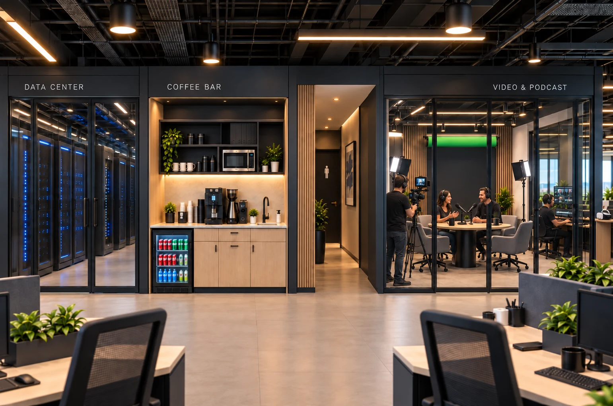

Inicio / Soluciones / Generative Media & XR
Hardware + AI
Generative Media & XR
Contenido, producción y experiencias digitales que combinan creatividad, inteligencia artificial y medios inmersivos.

Tecnología aplicada a una necesidad empresarial concreta
Empresas que necesitan comunicar, capacitar o presentar una experiencia mediante contenido audiovisual o interacción digital.
La comunicación requiere producción audiovisual
Una experiencia necesita interacción o inmersión
La capacitación se beneficiaría de contenido digital
Una campaña busca formatos innovadores y medibles
Qué puede incluir
El alcance se define después de comprender el proceso, los usuarios, las integraciones y los requisitos de seguridad.
Componentes posibles
- Video & Podcast Production
- Contenido generativo y avatares
- Experiencias XR e inmersivas
- Activaciones para marcas y eventos
Cómo identificar el ajuste
MYNDTEKS evalúa la necesidad antes de recomendar una configuración. Una misma solución puede comenzar con un alcance reducido y ampliarse después de validar su utilidad.
Capacidades relacionadas
Esta solución puede combinarse con otras capacidades del portafolio según el objetivo y el entorno tecnológico.